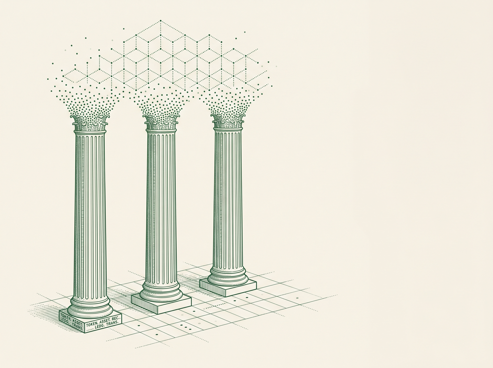
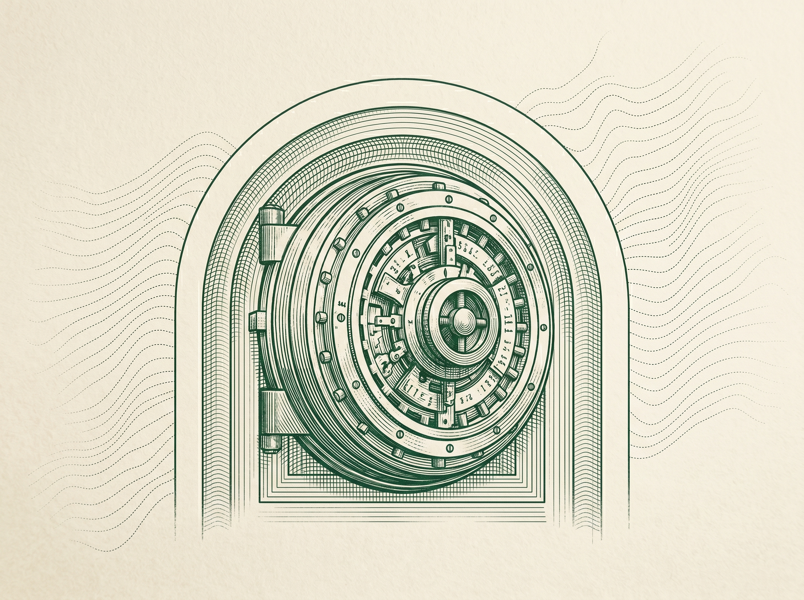
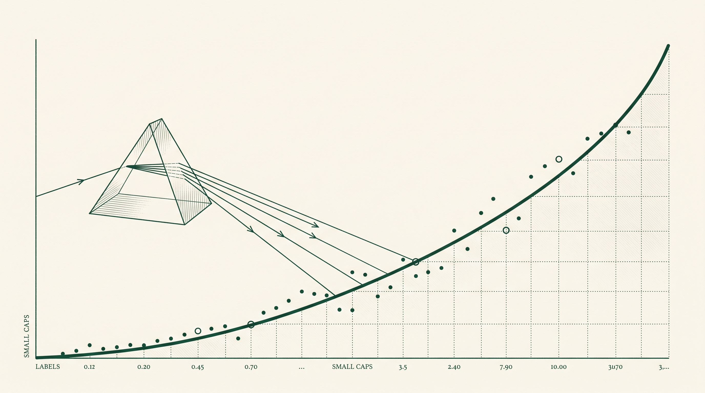

01 / Layer 1 Protocols
Consensus & Scaling
Mechanism design, throughput economics, and the trade-offs that determine which networks settle institutional flow.
Read Series →Strategic frameworks for navigating blockchain, treasury optimization, and Web 3.0 — built for the institutions deciding how the next financial system gets adopted.
Four practice areas for institutions building, allocating, and integrating digital-asset strategies — designed to be defensible at the boardroom and the desk.
Framework design for treasury bills, private credit, and alternative assets — covering structuring, custody, and secondary-market mechanics.
Best practices for institutional custody, settlement, and operational controls — written for risk, ops, and compliance, not for crypto-native readers.
Quantitative models for portfolio construction and risk management across liquid tokens, restaked yield, and emerging RWA categories.
Web 3.0 integration roadmaps aligned with institutional requirements — phased delivery, vendor selection, and stakeholder communication.

The institutions that win the next decade won't be the ones that chase tokenization — they'll be the ones who can defend their framework on a Tuesday morning at 7 a.m.
Six standing coverage areas — refreshed quarterly with new reports, primers, and data appendices for institutional subscribers.
Mechanism design, throughput economics, and the trade-offs that determine which networks settle institutional flow.
Read Series →Reserve architectures, redemption mechanics, and the payment-rail thesis behind a $185B float.
Read Series →How AMMs, perpetuals, and on-chain credit are quietly reorganizing market microstructure.
Read Series →Case studies and implementation playbooks from banks, asset managers, and corporate treasuries.
Read Series →Jurisdictional read-throughs on securities law, banking guidance, and stablecoin frameworks.
Read Series →Trading-venue evolution, price-formation research, and the institutional liquidity map.
Read Series →Custody, settlement, and operational control aren't features of digital-asset infrastructure. They are the infrastructure.

Model the multiple expansion, balance-sheet effect, and signaling premium of moving treasury into tokenized and digital assets — with assumptions you can defend to the board.
Launch Calculator